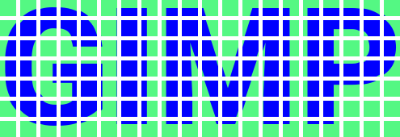

This script slices a layer in vertical or horizontal strips and creates a new image, putting a specified spacing between them.
The Unshred action does the reverse, it takes strips in the source layer with a given spacing, and puts them side by side in a new image.
When shredding, the spacing in only used between strips, there are no "outer" spaces. Un-shredding has been designed to do the exact opposite, so there should be no outer spaces in the layer.
The two functions are available as the Layer>Shred and Layer>Unshred menus of the Image window.
Direction: the direction of the strips. Strip Width: the with of the strips to create (shred) or the width of the strip to keep (not including the spacing)(un-shred).Spacing: the spacing to add (shred) or to remove (un-shred).Merge strip layers: whether the resulting image should be flattened or not.Running the script a second time on the result of the first execution and using the alternate direction yields squares with the specified spacing betwen them (shred), or removes the specifiec spacing from squares (unshred).
The Strip width and Spacing parameters to un-shred are exactly the same as the ones used to shred.
Initial image:
Vertical shredding, strip width=20, spacing=5:
Horizontal shredding of the above, with same width and spacing:
